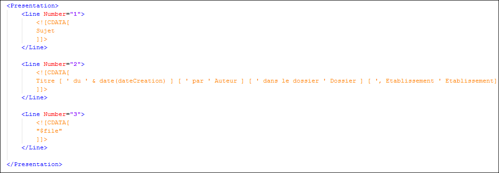

La balise <Presentation> du fichier Search_CommunFields.xml décrit le contenu des lignes de résultat :
Ligne bleu : le sujet
Ligne verte : les informations « techniques »
Ligne grise (facultative) : les pièces jointes
La présentation du résultat peut être modifiée pour un document particulier dans la section <Presentation> de la description du document.
La balise xml <![CDATA[ permet de banaliser du texte pour insérer une valeur comportant des signes xml réservés comme < et >
La balise fermante correspondante est ]]>. Elle encadre obligatoirement la description des lignes de résultat.

Le texte peut contenir :
Un nom de field « stored » (par exemple DateCreation)
Des constantes entre simple quote (par exemple ' du ' )
Les textes entre [ ] n’apparaissent pas dans le résultat si le field contient une valeur nulle.
La "fonction" date pour l’affichage des dates.